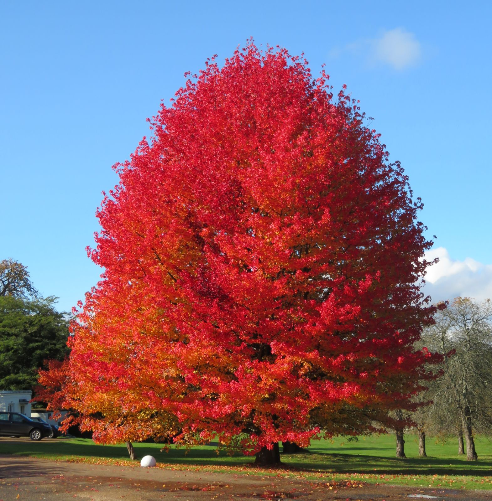
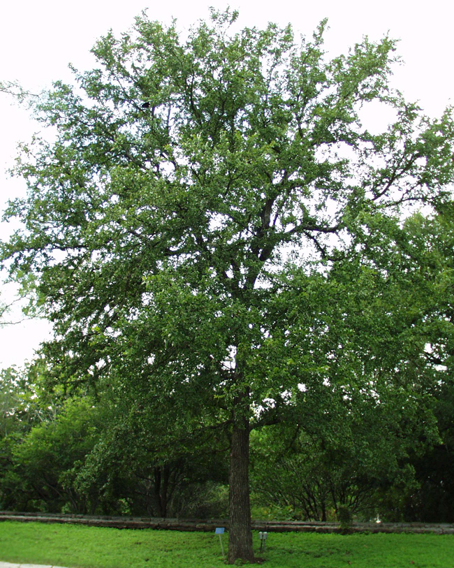
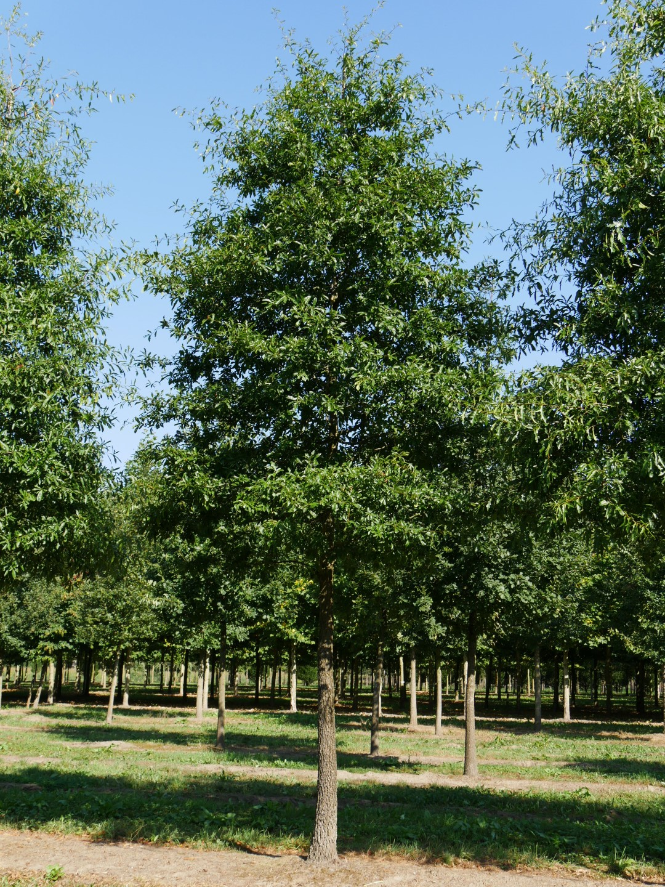
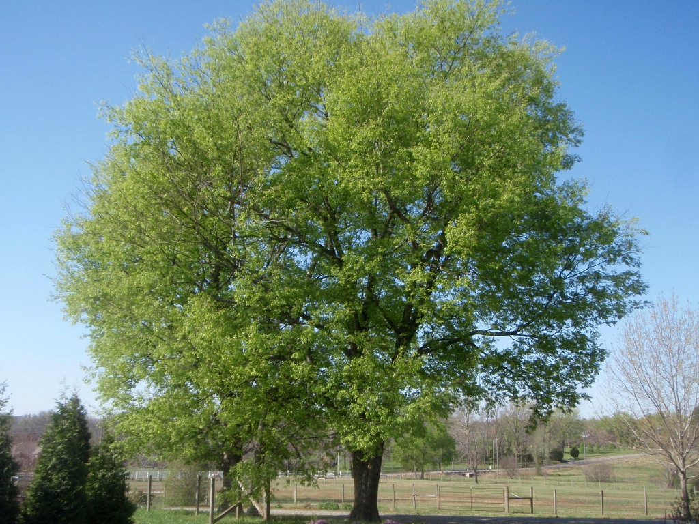
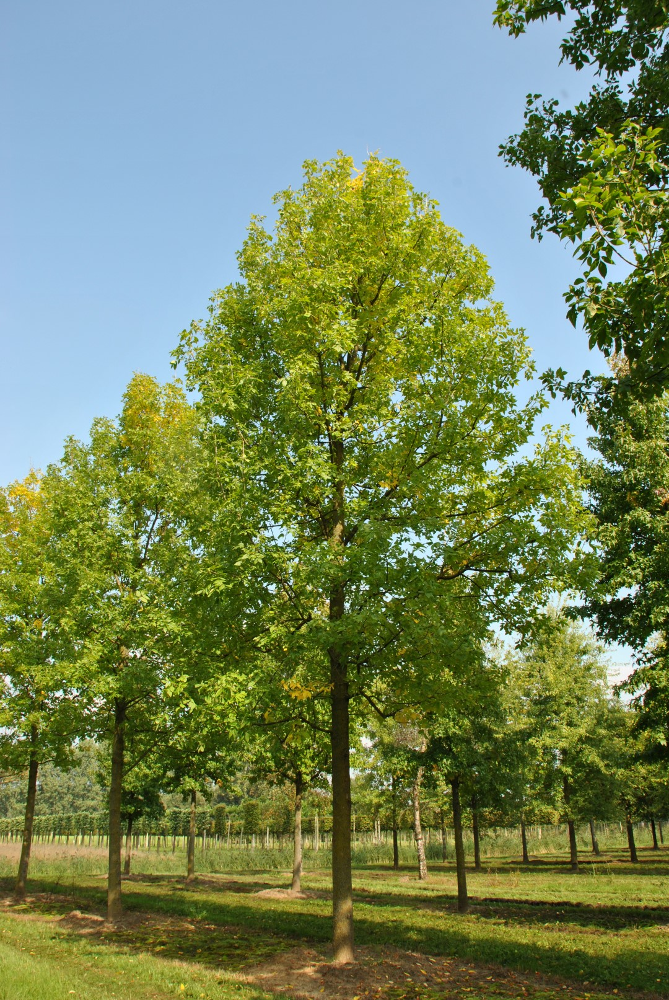
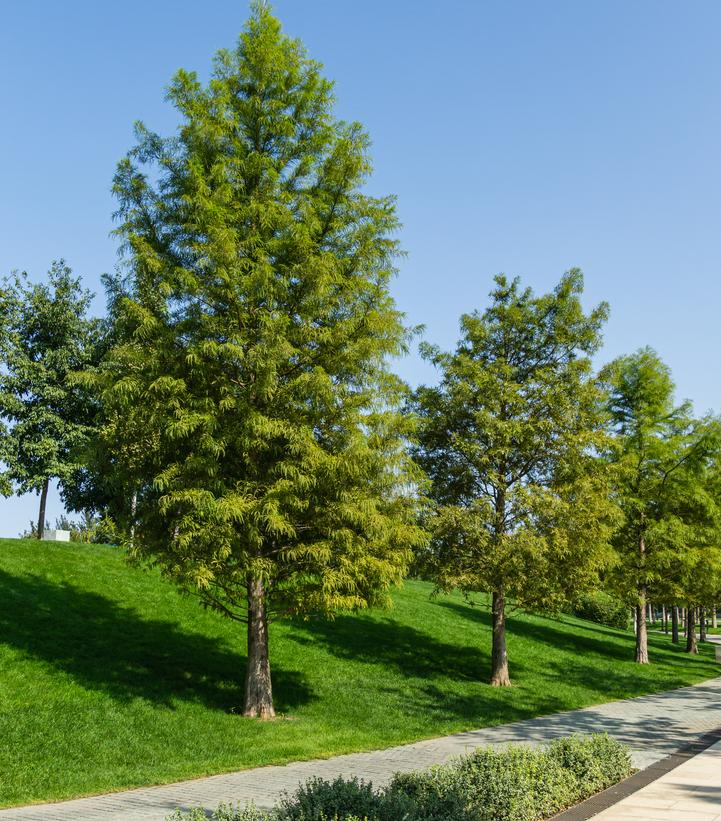

Now: Dfa
Hot summer humid continental: four distinct seasons, large seasonal temperature differences. Warm to hot (often humid) summers, freezing winters. Even precipitation throughout the year, can have dry season.
2100: Cfa
Humid subtropical: hot, humid summers / cool to mild winters - no permanent snow cover. Can be monsoon-influenced or have uniform / varying rainfall.
508,394 people living here.
Average SUHI daytime: 0.94
Average SUHI nighttime: 0.45
Similar to: Houston
Suggested Urban Plants
Triadica sebifera
Pinus taeda

Liquidambar styraciflua

Ulmus crassifolia

Quercus nigra

Celtis laevigata

Fraxinus pennsylvanica

Taxodium distichum